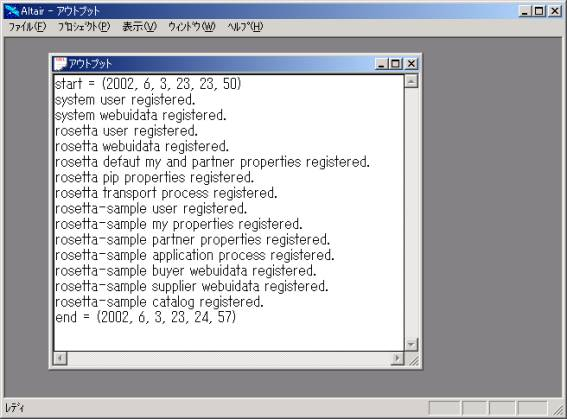
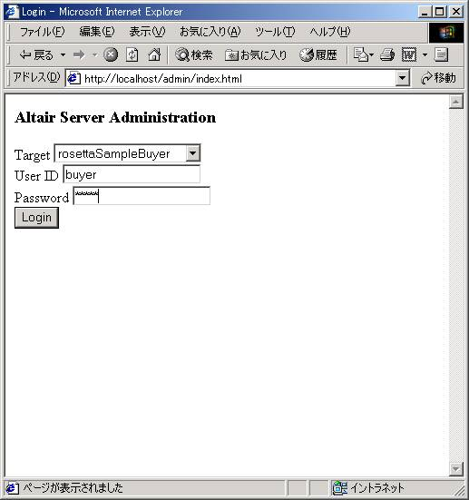
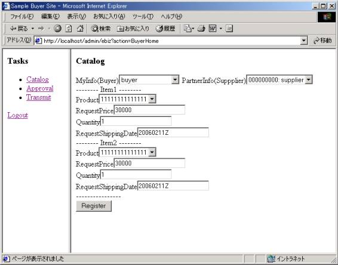
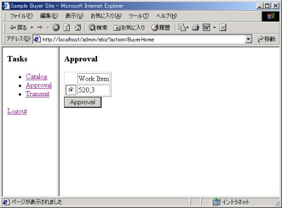
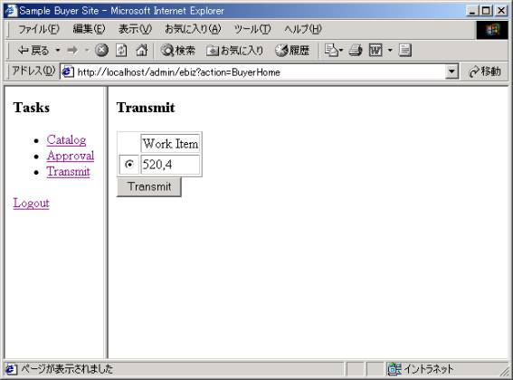
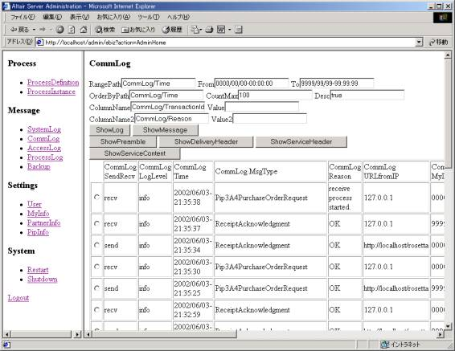
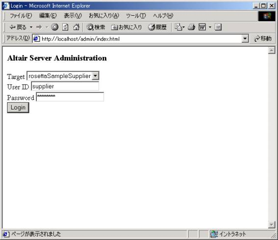
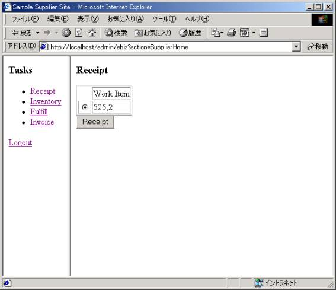
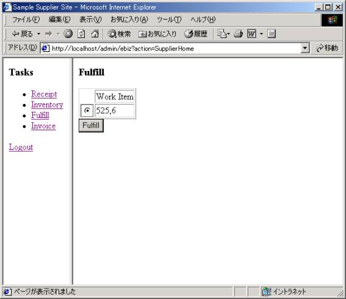
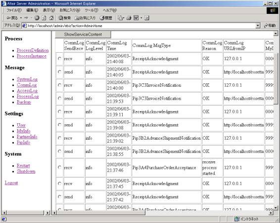

初期設定とサンプルの動かし方
第0.43版 2016年10月23日
第0.27版 2002年 6月19日
まず、サーバがDBを使用するときの接続ユーザを決め、DBテーブルを作成します。
DBユーザは使用できる任意のユーザで構いません。
PostgresQLの場合
psqlコマンドで、./sql/postgresql/create_table.sqlを実行します。
MySQLの場合
mysqlを起動し、./sql/mysql/create_table.sqlを実行します。
次に、./config.xmlにDB接続情報を設定します。
config.xmlの以下の部分を使用するDBの環境に合わせて書き換えます。
<DbType>DBタイプ</DbType>
<Host>DBサーバマシン名</Host>
<Port>DBサーバ接続ポート番号</Port>
<DbName>DB名</DbName>
<DbUser>DB接続のユーザID</DbUser>
<DbPassword>DB接続のパスワード</DbPassword>
Windows版
DBタイプ: postgresql or mysql
DBサーバマシン名: ODBCドライバによっては省略可。
DBサーバ接続ポート番号: ODBCドライバによっては省略可。
DB名: ODBCのデータソース名
DB接続のユーザID: DB接続ユーザID
DB接続のパスワード: DB接続パスワード
例：
<DbType>oracle</DbType>
<Host></Host>
<Port></Port>
<DbName>ORCL</DbName>
<DbUser>scott</DbUser>
<DbPassword>tiger</DbPassword>
Linux版PostgresQL
DBタイプ: postgresql
DBサーバマシン名: DBサーバマシン名。
DBサーバ接続ポート番号: デフォルトの5432なら省略可。
DB名: PostgresQLのDBの名前
DB接続のユーザID: DB接続ユーザID
DB接続のパスワード: DB接続パスワード
例：
<DbType>postgresql</DbType>
<Host>ecsvr</Host>
<Port></Port>
<DbName>ebizdb</DbName>
<DbUser>ebizuser</DbUser>
<DbPassword>ebizpass</DbPassword>
Linux版MySQL
DBタイプ: mysql
DBサーバマシン名: DBサーバマシン名
DBサーバ接続ポート番号: ポート番号
DB名: MySQLのDBの名前
DB接続のユーザID: DB接続ユーザID
DB接続のパスワード: DB接続パスワード
例：
<DbType>mysql</DbType>
<Host>localhost</Host>
<Port>3069</Port>
<DbName>mda</DbName>
<DbUser>mda</DbUser>
<DbPassword>mda</DbPassword>
altairを起動し、プロジェクトウィンドウで右クリック、「ファイル」-「開く」 で
./server.aprを開きます。
クラスウィンドウのAltairServerをダブルクリックし、static void start();の行に
キャレットを置き右クリック、「インタプリタ」-「テスト実行」でサーバを起動します。
クラスウィンドウのInitWebServiceDBをダブルクリックし、static void init_all();の行に
キャレットを置き右クリック、「インタプリタ」-「実行」でDB初期化を実行します。
設定に問題がなければDBの初期化が行われ、以下のメッセージが
アウトプットウィンドウに表示されます。
550MHzのマシンでDBの初期化にOracleで約１分、PostgresQLで約30秒かかります。

ブラウザで http://localhost/admin を開きます。
以下のユーザのどれかでログインして画面が表示されれば初期セットアップは終了です。
RosettaNet以外のプロトコルにも対応できるようにするため、
rosettaのユーザとsysytemユーザに分かれています。
// サーバ管理ユーザ
Target: system, ユーザID: admin, パスワード: admin
// サーバ管理画面のカスタマイズユーザ
Target: system, ユーザID: webuiadmin, パスワード: webuiadmin
// RosettaNetサーバ管理ユーザ
Target: rosetta, ユーザID: admin, パスワード: admin
// RosettaNetサーバ管理画面のカスタマイズユーザ
Target: rosetta, ユーザID: webuiadmin, パスワード: webuiadmin
// サンプルBuyerサイト管理ユーザ
Target: rosettaSampleBuyer, ユーザID: admin, パスワード: admin
// サンプルBuyerサイト管理画面のカスタマイズユーザ
Target: rosettaSampleBuyer, ユーザID: webuiadmin, パスワード: webuiadmin
// サンプルBuyerサイト業務ユーザ
Target: rosettaSampleBuyer, ユーザID: buyer, パスワード: buyer
// サンプルSellerサイト管理ユーザ
Target: rosettaSampleSupplier, ユーザID: admin, パスワード: admin
// サンプルSellerサイト管理画面のカスタマイズユーザ
Target: rosettaSampleSupplier, ユーザID: webuiadmin, パスワード: webuiadmin
// サンプルSellerサイト業務ユーザ
Target: rosettaSampleSupplier, ユーザID: supplier, パスワード: supplier
デモサンプルは、BuyerサイトのWeb画面と、SellerサイトのWeb画面から構成され、
以下を行います。
- BuyerサイトのにBuyerでログイン。
- Buyerサイトで発注内容の登録。（Pip3A4PurcharseOrderRequestメッセージ作成）
- Buyerサイトで発注内容の承認。
- BuyerサイトからSellerサイトにPip3A4PurcharseOrderRequestメッセージ送信。（発注）
-
- SellerサイトにSellerでログイン
- Buyerから送られたPip3A4PurcharseOrderを受付。
(Pip3A4PurchaseOrderAcceptanceメッセージ返信)
- Sellerサイトで在庫の確認。
- SellerサイトからBuyerサイトに配送(Pip3B2AdvanceShipmentNotification)メッセージ送信。
- SellerサイトからBuyerサイトに請求(Pip3C3InvoiceNotification)メッセージ送信。
BuyerサイトへのBuyerでのログインは、
URL http://localhost/admin/ を開き、
Target: rosettaSampleBuyer、ユーザID: buyer、パスワード: buyerでログインします。

購買情報の登録は、まずメニューのCatalogを選択します。
MyInfoで buyerを選択し、PartnerInfoで 000000000: supplierを選択し、
Registerボタンを押すと、発注業務プロセスが起動され、
この中からbuyerから supplierへのPurchaseOrderRequestメッセージが作成され、
発注プロセスが承認待ちになります。

メニューのApprovalを選択すると、承認待ちになっている発注プロセスが
表形式で表示されます。
Radioボタンでプロセスを選択し、Approvalボタンを押すと発注プロセスが
承認済み、発注待ちに変わります。

メニューのTransmitを選択すると、発注待ちになっている発注プロセスが
表形式で表示されます。
Radioボタンでプロセスを選択し、Transmitボタンを押すと発注メッセージが
Sellerサイトに送信されます。

メッセージの送受信が完了後、管理画面で通信ログを参照すると、
PurchaseOrderRequestの送信と受信、Ackの送信と受信、
Sellerサイトでの受信プロセスの起動のログが表示されます。
（自分から自分に送信しているので同じメッセージの送信ログと受信ログが現れています）

SellerサイトへのSellerでのログインは、
URL http://localhost/admin/ を開き、
Target: rosettaSampleSupplier、ユーザID: supplier、パスワード: supplierでログインします。

メニューのReceiptを選択すると、受付待ちになっている受注プロセスが
表形式で表示されます。
Radioボタンでプロセスを選択し、Receiptボタンを押すと受注メッセージが
Buyerサイトに送信されると同時に受注プロセスが
受付済み、在庫確認待ちに変わります。

メニューのInventoryを選択すると、在庫確認待ちになっている受注プロセスが
表形式で表示されます。
Radioボタンでプロセスを選択し、Inventoryボタンを押すと受注プロセスが
在庫確認済み、配送待ちに変わります。
メニューのFulfillを選択すると、配送待ちになっている受注プロセスが
表形式で表示されます。
Radioボタンでプロセスを選択し、Fulfillボタンを押すと配送メッセージが
Buyerサイトに送信されると同時に受注プロセスが
配送済み、請求待ちに変わります。

メニューのInvoiceを選択すると、請求待ちになっている受注プロセスが
表形式で表示されます。
Radioボタンでプロセスを選択し、Invoiceボタンを押すと請求メッセージが
Buyerサイトに送信されると同時に受注プロセスが
請求済みに変わります。
メッセージの送受信が完了後、管理画面で通信ログを参照すると、
PurchaseOrderAccpeptance、AdvanceShipmentNotification、InvocieNotificationの送信と受信、
対応するAckの送信と受信のログが表示されます。
（自分から自分に送信しているので同じメッセージの送信ログと受信ログが現れています）

「パートナー毎の設定」のURLをmailto:<mail-address>にして送信します。
例: URL mailto:rosetta@xyz.com
「自社サーバーの設定」の以下の項目を正しく設定し、
変更後はサーバを再起動することが必要です。
smpt.server SMTPの送信の場合のSMTPサーバ名
from.mail.address SMTPの送信の場合の自社のメールアドレス
pop.server SMTPの受信の場合のPOPサーバ名
pop.poll.interval SMTPの受信の場合のPOPサーバをポーリングする時間間隔 (単位 秒)
pop.userid SMTPの受信の場合のPOPのユーザID
pop.password SMTPの受信の場合のPOPのパスワード
例：
smpt.server smtp.xyz.com
from.mail.address rosetta@xyz.com
pop.server pop.xyz.com
pop.poll.interval 10
pop.userid rosetta
pop.password rosetta
「パートナー毎の設定」の<メッセージタイプ>.syncをtrueにして送信します。
例: Pip3A4PurchaseOrderRequest.sync true
例: Pip3B2AdvanceShipmentNotification.sync true
例: Pip3C3InvoiceNotification.sync true
同期通信で受信した場合、メッセージが読み取れないなどのエラーの場合は
HTTPレスポンスコードが200以外になります。
それ以外の場合、HTTPレスポンスコードは200、レスポンスメッセージは、
１アクションPIPの場合は、ReceiptAckまたはReceiptExceptionになり、
２アクションPIPの場合は、レスポンスメッセージになります。
２アクションPIPのレスポンスメッセージは、
「パートナー毎の設定」の<１アクション目のメッセージタイプ>.replyを
レスポンスを作成するクラス名にします。
例: Pip3A4PurchaseOrderRequest.reply POSyncAcceptService
レスポンスを作成するクラス名は、メソッド list invoke(list props); を持つ必要があります。
ActionメッセージのIDは、invokeメソッド中で al_dst_node(props, "msgId"); で取得できます。
invokeメソッド中で作成したResponseメッセージのIDは、
返却値をretとするとき al_dst_node(ret, "rMsgId"); で取得できるようにします。
● Proxyサーバ側設定（config.xml）
以下のコメント（when proxy）をはずしてをサーバを起動します。
<Servlet>
<Path>/rosetta</Path>
<Class>RNIF20Servlet</Class>
<!-- when proxy
<Param>
<Name>proxy</Name>
<Value>true</Value>
</Param>
<Param>
<Name>inbound.dir</Name>
<Value>./tmp</Value>
</Param>
-->
</Servlet>
<!-- when proxy
<Servlet>
<Path>/proxyPollee</Path>
<Class>ProxyPolleeServlet</Class>
<Param>
<Name>inbound.dir</Name>
<Value>./tmp</Value>
</Param>
<Param>
<Name>password</Name>
<Value>proxy_pass</Value>
</Param>
</Servlet>
-->
● LAN内RosettaNetサーバ側設定
「自社サーバーの設定」の以下の項目を正しく設定してサーバを再起動します。
proxy.server Proxy経由の送信の場合のProxyサーバ名
proxy.port Proxy経由の送信の場合のProxyサーバのポート番号
proxy.poll.url Proxy経由の受信の場合のProxyのWebサーバのURL
proxy.poll.interval Proxy経由の受信の場合のProxyのWebサーバをポーリングする時間間隔 (単位 秒)
proxy.poll.password Proxy経由の受信の場合のProxyのWebサーバをポーリングするときのパスワード
例：
proxy.server svr1
proxy.port 8080
proxy.poll.url http://svr1/proxyPollee
proxy.poll.interval 10
proxy.poll.password proxy_pass
「パートナー毎の設定」の以下の項目を正しく設定します。
URL http://<proxy-server>/rosetta
例：
URL http://svr1/rosetta